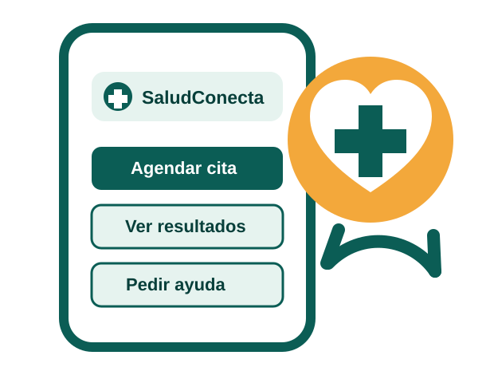

Resultados médicos
Consulte sus resultados de forma ordenada y fácil de entender.
Ver resultadosSu salud en un solo lugar
¿Qué necesita hacer hoy? Elija una opción y le guiaremos paso a paso.

Accesos directos
Consulte sus resultados de forma ordenada y fácil de entender.
Ver resultadosConozca las opciones disponibles para recibir orientación médica.
Ver opcionesRevise en un solo lugar la información principal de su atención.
Más informaciónEncuentre indicaciones simples para consultar sus medicamentos.
Ir a farmaciaPrimera visita